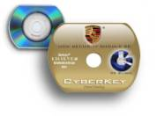

#!/usr/bin/perl5 -s

print "Content-type: text/html\n\n";

{
print <<EOF

<html>
<head>
<title>Coastline Micro, Inc. - CyberKey Security Token Information</title>
<meta http-equiv="Content-Type" content="text/html; charset=iso-8859-1">
<META NAME="Keywords" content="Custom Server, Microsoft Windows, Intel Solution Provider, Personal Computer, cm, coastline micro, thresher, mako, great white, reef, vpn, 3105, 3115, 3125, 1080, shiva, security, intel servers, intel workstations, intel desktop, motherboards, nec, seagate, hard drives, hd, kingston, memory, networking, network services, cabling, network attached server, nas, san, lan, wan, SC5200, SC5250E, SR2300, Rackmount Chassis, Server Chassis, Redundant Power, Midtower, Minitower, serial ata, ata, scsi, u320, storage server 2003, windows storage server 2003, microsoft windows storage, windows storage server, wpnas">
<META NAME="Description" content="Since 1989 Coastline Micro has been assembling quality built-to-order computer systems, including servers, workstations and PCs, for VARs and resellers nationwide. Review our site for information on servers, nas, computers, vpn's, security, networking, intel, microsoft, ibm, seagate, servers, network attached storage, desktops, notebooks, pdf, credit application, credit, line of credit, credit line, creditline, purchase program, system purchase, school program">
<meta NAME="CLASSIFICATION" CONTENT="Business:Computer Harware and Software Business:Internet Services:Computer Network">
<meta name="GENERATOR" content="NetMedia Solutions (Drlouie Version 2)">
<meta name="ProgId" content="NMS.Editor.Document
<meta name="robots" content="index,follow">
<meta name="rating" content="General">
<meta name="netinsert" content="0.0.1.12.17.1">
<meta http-equiv="Content-Language" content="en-us">
<meta http-equiv="PICS-Label" content='(PICS-1.1 "http://www.icra.org/ratingsv02.html" l gen true r (cz 1 lz 1 nz 1 oz 1 vz 1) "http://www.rsac.org/ratingsv01.html" l gen true r (n 0 s 0 v 0 l 0) "http://www.classify.org/safesurf/" l gen true r (SS~~000 1))' />
<META HTTP-EQUIV="title" content="Coastline Micro, Inc. - CyberKey Security Token Information">
<meta name="revisit-after" content="8 days">
<meta name="abstract" content="CyberKey Security Token is CK Global’s patent-pending, two-factor security token. A credit card-sized mini-CD using the reliable PIN # and encrypted key combination is an accepted form factor that delivers a cost efficient infrastructure independent solution for accessing corporate networks, intranets and VPN’s.">
<meta name="security" content="Public">
<meta name="source" content="NMS-DRLv2 Website Developer, Hard-Code 7.16.03">
<meta name="format" content="text/html">
<meta name="charset" content="ISO-8859-1">
<meta name="owner" content="mpnunez\@coastlinemicro.com">
<meta name="rights" content="Copyright (c) 2001 by Coastline Micro, Inc.">
<script language="Javascript">
///////////////////////////////////////////////////////////////////
// This script and its counterparts are ©2001 NetMedia Solutions //
// For use ONLY with CoastlineMicro.com                          //
// To re-use or have this script re-interfaced for your specific //
// needs please contact SServices\@NetMediaSolutions.com         //
// Prices are cheap for re-interfacing of current scripts and    //
// programs, so email us today to get you own LEGAL programming  //
// licensed for use only on YOUR site(s) or for YOUR purpose(s). //
///////////////////////////////////////////////////////////////////
function jumpMe() {
	parent.document.location.href = "http://www.coastlinemicro.com/framer.html?subject=services&title=cyberkey&PageTitle=CyberKey Security Token Information";
}
</script>

<SCRIPT LANGUAGE="JavaScript">
<!-- Begin
function loadScript() {
if (document.getElementById) {  // DOM3 = IE5, NS6
document.getElementById('hidepage').style.visibility = 'hidden';
}
else {
if (document.layers) {  // Netscape 4
document.hidepage.visibility = 'hidden';
}
else {  // IE 4
document.all.hidepage.style.visibility = 'hidden';
      }
   }
}
//  End -->
</script>
<style type="text/css">
#hidepage {z-index:2000}
body { scrollbar-face-color:#F2F2F7; scrollbar-highlight-color:#F2F2F7; scrollbar-shadow-color:#8f8fab; scrollbar-3dlight-color: #333366; scrollbar-arrow-color:#333366; scrollbar-track-color:#F2F2F7; scrollbar-darkshadow-color:#8f8fab; }
</style>
<div id="hidepage" style="position: absolute; left:0px; top:0px; background-color: #FFFFFF; layer-background-color: #FFFFFF; height: 100%; width: 100%;">
<table width=100% cellpadding="0" cellspacing="0">
<tr height="100%"><td align="center" valign="middle"><br><br><font face="verdana,arial,helvetica" size="2" color="#333366"><br><br>Loading DHTML interactive user interface, please wait...<br><br><br><br><br><font size="1"><b><u>Compatibility</u></b><br><br>Win/Mac MSIE 4/5/6<br>Win/Mac/Linux Netscape 4/6<br><br><i>Best if viewed on Windows 95/98/2000 platform using MSIE 4+</i></font></font></td></tr>
</table>
</div> 
<script language="JavaScript" src="js/reload.js"></script>

<!--FOLLOWING EXTERNAL SCRIPT IS USED FOR BROWSER TESTING AND IS INTEGRAL PART OF POW-->
<script language="JavaScript" src="js/dynlayer.js"></script>
<!--END-->

<meta http-equiv="Content-Type" content="text/html; charset=iso-8859-1">
<meta name="keywords" content="coastlinemicro.com, www.coastlinemicro.com, coastline, micro, irvine, ca, california, about, company, location, businsess, competition, competitors, solutions, irvine, california, technology, ceo, own, partner, fast, reliable, heritage, sophisticated, computer, system, build, custom, sample, guarantee, search, product">
<meta name="description" content="Coastline Micro Inc. is in business to develop hardware solutions that make sense for the small to corporate sized business arena. We have been in business for over a decade and have the knowledge and expertise necessary to be competitive in the market. Our every product carries a 100% Product Satisfaction Guarantee. We are located in Irvine, California at 60 N. Technology Drive. For more information about our company and its what it is in business to do please follow the link above. Our company's Heritage dates back to 1989.">
<script language="JavaScript" src="js/menu_config.js"></script>
<LINK REL="STYLESHEET" HREF="common_css.html" Type="text/css">

</head>
<body bgcolor="#ffffff" text="#333366" leftmargin="0" topmargin="0" marginwidth="0" marginheight="0" onLoad="javascript:jumpMe();">

<!-- Copyright NetMedia Solutions and Coasltine Micro, Inc.-->
<script language="Javascript" src="js/menu_constructor.js"></script>

<!-- Start header table -->
<table width="100%" border="0" cellspacing="0" cellpadding="0" background="images/newones/top_tablebg_main.jpg" height="100">
  <tr> 
    <td width="30%"></td>
    <td align="right" valign="middle" width="70%"><font size="1" color="#ffffff" face="verdana,arial,helvetica">Thursday, July 17, 2003&nbsp;&nbsp;<font size="3">&nbsp;</font></font>
	<center></center></td>
  </tr>
</table>
<!-- End header table -->

<table width="100%" border="0" cellspacing="0" cellpadding="0">
  <tr>
    <td width="175" align=left valign=top> <br>
<table width="95%" align="center" cellpadding="0" cellspacing="0" border="0"><tr><td align="center" width="100%">

<font face="verdana,arial,helevtica" size="1" color="#333366">
<br>
&copy;2001 Coastline Micro, Inc.<br>
60 Technology Drive<br>
Irvine, CA 92618<br>
Toll-Free: (800) 729-6809<br>
Phone: (949) 450-9966<br>
Fax: (949) 450-9977<br><br>
All Copyrights and Trademarks are properties of their respective owners.<br><br>
<a href="contact.html?title=gencomments"><font class="outerlink">General comments</font></a><br>
<a href="contact.html?title=sitecomments"><font class="outerlink">Site comments</font></a><br>
</font>
</td></tr></table></td>
    <td width="5"></td>
    <td width="100%" align="center" valign=top><br><table width="90%" border="0" cellspacing="0" cellpadding="0" align="center">
  <tr>
    <td>
      <table width="100%" border="0" cellspacing="0" cellpadding="0">
        <tr> 
          <td width="35%"><font class="stextbig"><b>CyberKey&#153; - Security 
            Token</b></font></td>
          <td align="right" width="65%">&nbsp;</td>
        </tr>
        <tr bgcolor="#333366"> 
          <td colspan="2" height="1"></td>
        </tr>
        <tr> 
          <td colspan="2" height="15"></td>
        </tr>
        <tr> 
          <td colspan="2" align="left" width="100%">
<table width="100%" border="0" cellspacing="0" cellpadding="2" align="center">
<tr>
<td width="2%" valign="top">&nbsp;</td>
                <td width="96%" valign="top"><center><b><font color="#333366" size="4" face="Verdana, Arial, Helvetica, sans-serif">Coastline Micro CyberKey&#153; Information</font></b></center><br>
  <br>
                  <font class="stext" style="font-size:13px;"><b>CyberKey&#153; 
                  - Security Token</b> is CK Global&#146;s patent-pending, two-factor 
                  security token. A credit card-sized mini-CD using the reliable 
                  PIN # and encrypted key combination is an accepted form factor 
                  that delivers a cost efficient infrastructure independent solution 
                  for accessing corporate networks, intranets and VPN&#146;s. 
                  With Portable 2 Factor Authentication Plus 50 Megabytes of storage 
                  memory (P2FA Plus&#153;) CyberKey&#153; provides an abundance 
                  of space for multiple keys/applications and countermeasures, 
                  in addition to its primary function, highly secure authentication 
                  of the user. And to enhance its formidable security, once it 
                  is removed from the CD drive CyberKey&#153; deletes all critical 
                  data from the computer or network.<br>
                  <br>
                  <ul>
                    <li><b style=\"color:#333366;\">Smart</b><br>
                      Resulting from CKG&#146;s experience in data security, the 
                      CyberKey&#153; is based on existing infrastructures, flexibility 
                      of encryption (based on the clients specifications), ease 
                      of adoption by users and portability.</li>
                    <li><b style=\"color:#333366;\">Small</b><br>
                      Because the CyberKey&#153; is a credit card-sized CD ROM, 
                      it is easily transportable by the user, in pocket, wallet, 
                      or purse. CyberKey&#153; can even be combined with proximity 
                      features for physical access to buildings and garages.</li>
                    <li><b style=\"color:#333366;\">Simple</b><br>
                      CyberKey&#153;&#146;s 
                      features make it the ideal tool for storing encryption keys, 
                      biometric data, passwords, cross platform access applications 
                      and electronic certificates &#150; all in a form factor 
                      users are familiar with - a CD. <b><br>
                      <br>
                      NO SPECIAL HARDWARE, DONGLE EXTENSIONS OR READERS NECESSARY.<br>
                      <br>
                      <br>
                      <br>
                      <br>
                      CYBERKEY&#153; P2FA PLUS&#153; FEATURES</b></li>
                  </ul>
                  <ul>
                    <li><b style="color:maroon;">Ease of Use</b> &#150; Easy adoption, 
                      single PIN (no password/User I.D. combination) and wallet 
                      portable.</li>
                    <li><b style="color:maroon;">Integration</b> &#150; Our team 
                      works with your team to install the software, distribute 
                      tokens and PIN numbers separately to end users ensuring 
                      total security. CyberKey&#146;s &#145;Plug &amp; Play&#146; 
                      features facilitate rapid implementation.</li>
                    <li><b style="color:maroon;">Appeal</b> - Small size and brand-able 
                      surface make it ideal for customer retention and brand positioning.</li>
                    <li><b style="color:maroon;">Security</b> &#150; Not only 
                      does CyberKey&#153; provide two-factor authentication, it 
                      also includes Counter Measures (CM) for complete end to 
                      end security.</li>
                    <li><b style="color:maroon;">Cost Efficiency</b> - Compared 
                      to other devices, CyberKey&#153; is the most cost effective 
                      security solution available today.</li>
                    <li><b style="color:maroon;">Large Memory Capacity</b> &#150; 
                      50 Megabytes memory for storage of multiple keys, certificates, 
                      biometric information, applications, delivery of employee 
                      records, etc.</li>
                    <li><b style="color:maroon;">Tamper Resistance</b> - CyberKey's 
                      cutting edge embedded code and notification applications 
                      protect all sensitive data, all the time even when stolen.</li>
                    <li><b style="color:maroon;">No Data</b> &#150; Once the card 
                      is removed from the CD drive, no data is left on the PC 
                      or Internet. </li>
                  </ul>
                  <b>COMMON APPLICATIONS</b> 
                  <ul>
                    <li>PKI client authentication.</li>
                    <li>Secure login locally and remotely for absolute ID and 
                      non-repudiation.</li>
                    <li>Remote access for roaming personnel such as traveling 
                      executives and sales reps.</li>
                    <li>Extranets enabling remote employees, consultants, suppliers 
                      and customers a secure pipe for transmitting data over public 
                      networks.</li>
                  </ul>
                  <br>
                  <br>
                  <b>CyberKey&#153; Technical Features</b> 
                  <ol type="1">
                    <li><b>CSO</b> &#150; (Computer Sign-On)<br>
                      This feature replaces the standard WinLogin.exe file with 
                      one that specifically requires a Personal Identification 
                      Number (PIN) and a CyberKey&#153; CD for login operation. 
                      The user provides a PIN that is used to decrypt a system 
                      password contained on the CyberKey&#153; CD. The PIN is 
                      combined with additional information from the system and 
                      the WinLogin program to form a 256 bit AES key. The key 
                      is used to access a unique password on the CyberKey&#153; 
                      CD. This password is used in the standard challenge and 
                      response handshake to attain access to a corporate computer 
                      and network.<br>
                      <br>
                    </li>
                    <li><b>NSO</b> &#150; (Network Sign-On)<br>
                      This feature works in conjunction with the CSO. The network 
                      access password, at the server, must be changed to the CyberKey&#153; 
                      password, by the systems administrator. This password is 
                      generated by a computer to be very difficult to remember, 
                      use the maximum number of character Microsoft allows and 
                      difficult to hack. In fact if a &#145;dictionary script&#146; 
                      (a specific hacking script that looks for words and letter 
                      combinations via an algorithm) is run at the computer it 
                      will be unable to access the PC or network.<br>
                      Additionally, if a user is traveling between offices where 
                      computers are touching the same network, the primary computer 
                      user for that office may sign off and allow the visitor 
                      to sign on using their CyberKey&#153;.<br>
                      <br>
                    </li>
                    <li><b>SSO</b> &#150; (Single Sign-On)<br>
                      SSO is delivered to the client in the form of an SDK (software 
                      development kit). This kit, when installed on the server, 
                      links existing user profiles with CyberKey&#153; access. 
                      Once installed a user that has access to 3 different softwares, 
                      ie. Oracle AP, Seibel and AS 400 will have a command bar 
                      generated to their screen. First they click on the application, 
                      then, fill in the PIN #. The software automatically accesses 
                      the CyberKey&#153; validates and authenticates the user 
                      and opens the software. The entire solution is managed by 
                      the systems administrator<br>
                      <br>
                    </li>
                    <li><b>RSO</b> &#150; (Remote Sign-On)<br>
                      This feature is used in cases where there is a corporate 
                      provider that wishes to maintain a secure access to an Internet 
                      portal or a dial-in network. The product replaces the standard 
                      &#147;Connections&#148; program found on Win 95 and later 
                      Windows operating system. The product prevents the use of 
                      unsecured memorized passwords for a specific provider and 
                      requires the use of a PIN to access an Internet Service 
                      Provider or a corporate dial-in port.<br>
                      <br>
                    </li>
                    <li><b>Counter Measures</b> - used to protect the CyberKey&#153; 
                      from unauthorized tampering. The CyberKey&#153; data is 
                      protected by a 256 bit AES key. Part of the key is provided 
                      by the user, the other parts of the key are provided by 
                      the network system and the program using the CyberKey&#153;. 
                      This is to ensure that only the correct program can be used 
                      to access the encrypted password. Assuming that an unauthorized 
                      individual attained the access programs to try all combinations 
                      of PIN numbers, the following counter measures exist with 
                      the access programs:<br>
                      <br>
                      <b>CM 1 - Network Sign-on Lock (NSOL<sup>CM</sup>)</b><br>
                      Allows the user 10 tries with increment periods of delays. 
                      The delays are two-part, one is within the WinLogin.exe 
                      program that maintains a count of unsuccessful attempts, 
                      the other is in the standard Domain Server password check. 
                      The latter delay is due to the fact that the tampering agent 
                      will get some type of password from each unsuccessful attempt. 
                      This password is sent to Domain Server and is rejected. 
                      This allows countermeasures to be put in place on the Domain 
                      Server by the client if so desired. Additionally, delays 
                      begin between 11-20 tries with incremental increases from 
                      1 minute to 10 minutes between each try; with options to 
                      eventually lock the CyberKey&#153; CD out all together. 
                      This feature can be designed to meet the Clients specifications.<br>
                      <br>
                      <b>CM 2 - Vandal Locator (VL<sup>CM</sup>)</b><br>
                      This feature is available when access to an Internet portal 
                      is available to the login program. If an illegal PIN is 
                      used in the login, the login program will interrogate the 
                      local computer and gather information useful for authorities. 
                      The information gathered is the MAC address from the network 
                      card used in the computer. (MAC addresses are industry standard 
                      and each network card must have a unique address. This can 
                      be used to identify a specific computer.) The second information 
                      gathered is the IP address from the vandals&#146; PC. This 
                      information is automatically emailed to CK Global. CK Global 
                      can then send the email through our reflector service and 
                      on to the Systems Administrator of the Clients&#146; network 
                      for client actions to take place.</li>
                  </ol>
<br><br><br>
<center><b>CYBERKEY FAQ&#146;s</b></center><br>
                  <ol type="1">
                    <li><b>What are the infrastructure requirements for a CyberKey&#153; 
                      implementation?<br>
                      <br>
                      </b>All that is needed are computers with CD drives and 
                      Windows NT/2K/XP Operating Systems. No additional hardware 
                      or software necessary for token implementation.<br>
                      <br>
                    </li>
                    <li><b>Does the End User have to remember his/her password 
                      after it has been changed by CyberKey&#153;?<br>
                      <br>
                      </b>No, in fact the password is never seen by the End User 
                      once CyberKey&#153; is installed.<br>
                      <br>
                    </li>
                    <li><b> What is the CyberKey&#153; installation process?<br>
                      <br>
                      </b>There are 2 sides to the installation process.<br>
                      <br>
                      <b>Server side:</b> Passwords that are supplied with the 
                      CyberKey&#153; Kit are installed within NT&#146;s User Manager.<br>
                      <b>Client side:</b> Each CyberKey&#146;s install program 
                      is run from the individual CD by the end-user or loaded 
                      from a corporate wide directory on a server. On the company 
                      server side, the ADMIN simply sets rules such as Allow User 
                      to Change Password, Password Never Expires or Password must 
                      follow preset conventions and the rest is taken care of 
                      by the end user.<br>
                      <br>
                      On the user side, CyberKeytm installation is very quick, 
                      usually less than a minute per computer. The user (or ADMIN) 
                      inserts the CyberKey&#153; in the CD drive and follows the 
                      prompts for automatic installation. The user is then required 
                      to perform the following steps:<br>
                      <br>
                      <ol type="1">
                        <li>Approve the license agreement.</li>
                        <li>Select a specific domain or the local machine.</li>
                        <li>Select a user name from the existing list of domain 
                          users or local users of the machine.</li>
                        <li>Enter their old password to verify the user.</li>
                        <li>Enter and confirm their new PIN.</li>
                      </ol>
                      <br>
                      What happens is that the CyberKey&#153; is automatically 
                      changing the password and Winlogin.exe on the machine, so 
                      that the card becomes &#145;required&#146; hardware during 
                      sign-on, whereby the PIN # validates the relationship between 
                      the CyberKey&#153; user, local computer and server. Note: 
                      What is important to know is that the user never knows or 
                      even needs to know their new password.<br>
                      <br>
                    </li>
                    <li><b>What is the recommended Implementation scenario?<br>
                      </b><br>
                      Phase 1: Install CyberKey&#153;&#146;s for computer and 
                      network security immediately, to raise the user access security 
                      of the corporation to its highest level possible.<br>
                      Phase 2: Analyze requirements for Single-Sign-On (SSO), 
                      Remote Sign-On (RSO) and Application Sign-On (ASO) (ASO 
                      is applicable to CRM, vendor payments, etc.).<br>
                      Phase 3: Implement custom modules as necessary.<br>
                      <br>
                    </li>
                    <li><b>What support is provided after installation of CyberKey?<br>
                      <br>
                      </b>We provide a single point of contact for support, customer 
                      care and technical. A special CyberKey&#153; is provided 
                      to enable the ADMIN to order replacement CyberKeys and to 
                      interact with our Oracle Database, specifically for client 
                      records regarding support, shipments, credit availability, 
                      etc.<br>
                      <br>
                    </li>
                    <li><b>What is the total cost of ownership (TCO) of CyberKey?<br>
                      <br>
                      </b>Additional server side modules priced based on users 
                      and server installs required. There is a minimal annual 
                      service contract for on-going support.<br>
                      <br>
                    </li>
                    <li><b>Can a single CyberKey be installed on multiple computers?<br>
                      <br>
                      </b>Yes. It self installs in about 30 seconds.<br>
                      <br>
                    </li>
                    <li><b>What happens when the computer goes into &#147;stand-by&#148; 
                      mode or &#147;hibernation&#148;?<br>
                      <br>
                      </b>When the computer goes into energy saving mode the CyberKey 
                      can be set to require the PIN number again, or not to, per 
                      the company security policy.<br>
                      <br>
                    </li>
                    <li><b>What is the ROI for CyberKey?<br>
                      <br>
                      </b>Based on IT support cost averages publicized by industry 
                      analysts (Meta Group, Gartner Group and Forrester Research) 
                      CyberKey has a return on investment of 120 % in the first 
                      year, based on password reset costs alone.<br>
                      <br>
                    </li>
                    <li><b>What happens if a user forgets his PIN number?<br>
                      <br>
                      </b>The ADMIN can give the user the same or a new PIN number 
                      for the same CyberKey.<br>
                      <br>
                    </li>
                    <li><b>Can multiple CyberKeys be used on a shared computer?<br>
                      <br>
                      </b>Yes, each user would have a CyberKey to authenticate 
                      to their respective data.<br>
                      <br>
                    </li>
                    <li><b>Does scratching of the CyberKey make it unusable?<br>
                      <br>
                      </b>No, the code is written several times on the CD so if 
                      damaged in one place, another will stay operable.<br>
                      <br>
                    </li>
                    <li><b>Can a CyberKey be uninstalled?<br>
                      <br>
                      </b>Yes, if the user is allowed to uninstall it and clicks 
                      the correct answer when initially installing the CyberKey. 
                      If higher security is desired, uninstalling can be prevented.<br>
                      <br>
                    </li>
                    <li><b>What happens if I lose my CyberKey? How quickly can 
                      I get a replacement?<br>
                      <br>
                      </b>With the assistance of your administrator, you may be 
                      able to attain a replacement onsite almost immediately. 
                      If your company does not choose that plan, replacement CyberKeys 
                      can be shipped to you via overnight delivery.<br>
                      <br>
                    </li>
                    <li><b>Is there an annual license/user fee for a CyberKey?<br>
                      <br>
                      </b>No, there is a one-time cost for the CyberKey. The server 
                      side modules for Single Sign-on, Remote Sign-on, and Application 
                      Sign-on, all have non-recurring engineering fees (NREs) 
                      and an annual per seat license fee.<br>
                      <br>
                    </li>
                    <li><b>How does a CyberKey make my network more secure?<br>
                      <br>
                      </b>The threat to a company/organization&#146;s security 
                      is from both outside hackers and inside employees/members. 
                      Outside hackers cannot get into a network that is protected 
                      with two-factor authentication. Inside hackers, never know 
                      the passwords that give them access the network/servers. 
                      They have a key but what is on it is encrypted. They never 
                      know the path in the network they have traveled. Once the 
                      user leaves the company/organization, their CyberKey can 
                      be immediately deactivated.<br>
                      <br>
                    </li>
                    <li><b>Does CyberKey overwrite NT password?<br>
                      <br>
                      </b>Yes, the original password, once verified is replaced 
                      by a password encrypted on the CyberKey. The user or the 
                      administrator does not need to know or worry what the replacement 
                      password is.<br>
                      <br>
                    </li>
                    <li><b>Does CyberKey rewrite the SAM database?<br>
                      <br>
                      </b>No, CyberKey only replaces the original password entry 
                      in the SAM. The SAM is not replaced or copied. It is recommended 
                      that a new Emergency Start Disk be created after installing 
                      CyberKey to ensure the changes to the SAM are saved.<br>
                      <br>
                    </li>
                    <li><b>Is the password left in the registry or memory from 
                      CyberKey?<br>
                      <br>
                      </b>No part of the password is ever stored in the registry, 
                      on the hard drive or in memory.<br>
                      <br>
                    </li>
                    <li><b>What would CyberKey do in a RAS situation?<br>
                      <br>
                      </b>CyberKey must first be installed while connected to 
                      the RAS domain. Once installed, access happens as if it 
                      was the standard Microsoft password procedure except that 
                      a PIN and card are required instead of the password.<br>
                      <br>
                    </li>
                    <li><b>Once I have implemented CyberKey, can I upgrade to 
                      Single Sign-on, Remote Sign-on or Application Sign-on without 
                      replacing the card?<br>
                      <br>
                      </b>In some cases, the card may need to be replaced. If 
                      you did not have single sign-on and now have upgraded to 
                      single sign-on then the card must be replaced. If you already 
                      had single sign-on then card replacement is on a case by 
                      case need. In most cases, it need not be replaced.<br>
                      <br>
                    </li>
                    <li><b>What happens when I need to add another application 
                      to Single Sign-on?<br>
                      <br>
                      </b>Single Sign-on is normally performed by accessing sign-on 
                      information from a central sever or the local machine. The 
                      method of access usually allows changing the information 
                      file. The CyberKey still provides the encrypted password 
                      but in most cases, the access method does not reside on 
                      the CyberKey. Therefore, only replacement of the server 
                      or local based information is required.<br>
                      <br>
                    </li>
                    <li><b>How do I get into my computer if the CD drive malfunctions?<br>
                      <br>
                      </b>The CD drive provides the only access method for the 
                      password to the password checking routines. If the CD drive 
                      malfunctions, it must first be replaced before you can get 
                      into your computer.<br>
                      <br>
                    </li>
                    <li><b>Does the CyberKey CD self-read on installation?<br>
                      <br>
                      </b>All that is required to install CyberKey is to bring 
                      up the setup program. All information required by CyberKey 
                      Setup is stored with the setup files.<br>
                      <br>
                    </li>
                    <li><b>Is the CyberKey un-installable? What is the process?<br>
                      <br>
                      </b>There are two methods to install CyberKey. There is 
                      a check box option to prevent removal of the installation. 
                      If this is not checked, then CyberKey can be removed easily 
                      by going to the Control Panel Add/Remove Software Aplet. 
                      If the option to prevent removal has been used, then an 
                      Administrator must use another program to allow removal. 
                      Note that in any case CyberKey cannot be completely removed 
                      unless the user of the computer has a valid CyberKey that 
                      matches the expected PIN used during installation.<br>
                      <br>
                    </li>
                    <li><b>What profile do you remove the CyberKey under?<br>
                      <br>
                      </b>The Administrator profile for the local machine is required 
                      for installation on the local machine. In Domains that allow 
                      the user to change the password, a standard user profile 
                      may be used to install CyberKey. If the user is not allowed 
                      to change passwords on the Domain then the Domain Administrator 
                      must install CyberKey.<br>
                      <br>
                    </li>
                    <li><b>Can CyberKey be copied to create a duplicate?<br>
                      <br>
                      </b>Yes, a backup duplicate can be made but as with the 
                      original key, the duplicate only contains a highly encrypted 
                      file containing the password. The PIN must still be used 
                      to allow the duplicate to be used.<br>
                      <br>
                    </li>
                    <li><b>Can I &#147;push&#148; the CyberKey out to my staff 
                      from the ADMIN?<br>
                      <br>
                      </b>No, a &#147;push&#148; is not possible because the user 
                      must be present to enter the old password to convert to 
                      a new PIN and the machine must be rebooted. It is possible 
                      to &#147;pull&#148; the setup from a central server. The 
                      ADMIN would then issue CyberKeys to each user with instructions 
                      on where to access the setup program.<br>
                      <br>
                    </li>
                    <li><b>Is there more than one PIN number on each CyberKey?<br>
                      <br>
                      </b>The ADMIN is able to provide the valid PINs<br>
                      <br>
                    </li>
                    <li><b>Does the CyberKey link to the MAC address of the computer 
                      it is installed on? What if I install the same CyberKey 
                      on more than one computer?<br>
                      <br>
                      </b>CyberKey is not limited to a single computer. In much 
                      the same way the old password would allow a user to access 
                      any machine on a domain using his user name and password. 
                      Just take your CyberKey with you to a new computer and enter 
                      your username and PIN.<br>
                      <br>
                    </li>
                    <li><b>Why is the memory space of 50MB on a CyberKey important, 
                      compared to other tokens?<br>
                      <br>
                      </b>In cases where CyberKey is used to protect an application, 
                      the storage space allows keeping the application on the 
                      card itself. Taking the card with you protects the application 
                      as well.<br>
                      <br>
                    </li>
                    <li><b>Can I clone a CyberKey?<br>
                      </b>See question 27.<br>
                      <br>
                    </li>
                    <li><b>Can the CyberKey be mass produced?<br>
                      <br>
                      </b>No, each CyberKey is uniquely generated using a computer 
                      to supply random PINs and passwords.<br>
                      <br>
                    </li>
                    <li><b>Do you need a PDC or domain setup for CyberKey?<br>
                      <br>
                      </b>No, CyberKey can be used either in standalone computers 
                      or computers on a Network with no PDC.<br>
                      <br>
                    </li>
                    <li><b>Does Windows Advanced Server with Active Directory 
                      affect CyberKey installation?<br>
                      <br>
                      </b>CyberKey only replaces the original Microsoft password 
                      process. If the original password process worked before, 
                      CyberKey will work now and provide better protection.<br>
                      <br>
                    </li>
                    <li><b>Are there any security settings in Windows NT/2000/XP 
                      that would prevent successful installation of CyberKey?<br>
                      <br>
                      </b>Yes, setting User Cannot Change Password will cause 
                      CyberKey to abort installation. Also, setting Password Never 
                      Expires is recommended. Rules on types of passwords must 
                      be strictly adhered to prior to setting up CyberKey. For 
                      instance, if your password rules specify that a password 
                      must be a mix of upper and lower case characters and must 
                      also contain numeric characters then this type of password 
                      must be requested when the CyberKey is originally ordered. 
                      If these rules are not followed, CyberKey will appear to 
                      install but will not let you access your computer after 
                      installation.<br>
                      <br>
                    </li>
                    <li><b>What happens if you say yes to the set-up prompt, &#147;Do 
                      you want to prevent CyberKey from being removed&#148;?<br>
                      <br>
                      </b>CyberKey can only be removed by a special program issued 
                      only to Administrators. If you do not have an Administrator 
                      or are a single user DO NOT select this option.<br>
                      <br>
                    </li>
                    <li><b>How does CyberKey interact with Novell?<br>
                      <br>
                      </b>Novell provides a third party program that resides on 
                      Microsoft's Domain Servers. If the original password access 
                      Method was standard Microsoft password access then CyberKey 
                      can be used with Novell. If standard Microsoft password 
                      access was not on the system then CyberKey cannot be used.<br>
                      </li>
                  </ol>
</font>
</td>
<td width="2%" valign="top" align="center">&nbsp;</td>
</tr>

</table>
		</td>
        </tr>
        <tr> 
          <td colspan="2" height="15"></td>
        </tr>
        <tr bgcolor="#333366"> 
          <td colspan="2" height="1"></td>
        </tr>
        <tr> 
          <td width="35%"><font class="stextbig"><b>&nbsp;</b></font></td>
          <td align="right" width="65%">&nbsp;</td>
        </tr>
            </table>
          </td>
        </tr>
      </table>
    </td>
  </tr>
</table></td>
  </tr>
</table>

<!-- Dynamic Moving Layers -->
<style type="text/css">
<!--
#searchBlock {position:absolute; left:50px; top:-135px; width:245px; height:135px; clip:rect(0px 245px 135px 0px);z-index:1501;}
#searchBlock2 {position:absolute; left:295px; top:-135px; width:245px; height:135px; clip:rect(0px 245px 135px 0px);z-index:1502;}
--> 
</style>

<script language="JavaScript"> 

///////////////////////////////////////////////////////////////////
// This script and its counterparts are ©2001 NetMedia Solutions //
// For use ONLY with CoastlineMicro.com                          //
// To re-use or have this script re-interfaced for your specific //
// needs please contact SServices\@NetMediaSolutions.com         //
// Prices are cheap for re-interfacing of current scripts and    //
// programs, so email us today to get you own LEGAL programming  //
// licensed for use only on YOUR site(s) or for YOUR purpose(s). //
///////////////////////////////////////////////////////////////////

<!--

//Global Moving Layer Introduction
function runSearch() {
	searchLayer1 = new DynLayer("searchBlock")
	searchLayer1.slideInit()
	searchLayer2 = new DynLayer("searchBlock2")
	searchLayer2.slideInit()
	// To hide netscape's DHTML script stack bugs
	if (is.ns5) { 
		searchLayer1.x == 50;
		searchLayer1.y == -135;
		searchLayer1.hide(); 
		searchLayer2.x == 295;
		searchLayer2.y == -135;
		searchLayer2.hide();
	}
}

//
// START Featured Product Controls


//
// START Search Panel Controls
// 

// SEARCH BOX ONE - INVENTORY SEARCH
function toggleSearch1() {	
	if (is.ns5) { 
	searchLayer1.show(); 
	}
	if (searchLayer1.y <= -135) {
		toggleSearch1Down();
	}
	if (searchLayer1.y >= 0) {
		toggleSearch1Up();
	}
}

function toggleSearch1Down() {
	if (searchLayer1.y == -135) {		
		javascript:searchLayer1.slideTo(50,0,5,10)
	}
}

function toggleSearch1Up() {
	if (searchLayer1.y == 0) {
		javascript:searchLayer1.slideTo(50,-135,5,10)
	}
}

// SEARCH BOX TWO - WEBSITE SEARCH
function toggleSearch2() {	
	if (is.ns5) { 
	searchLayer2.show(); 
	}
	if (searchLayer2.y <= -135) {
		toggleSearch2Down();
	}
	if (searchLayer2.y >= 0) {
		toggleSearch2Up();
	}
}

function toggleSearch2Down() {
	if (searchLayer2.y == -135) {		
		javascript:searchLayer2.slideTo(295,0,5,10)
	}
}

function toggleSearch2Up() {
	if (searchLayer2.y == 0) {
		javascript:searchLayer2.slideTo(295,-135,5,10)
	}
}
//-->
</script>


<!-- THIS IS SEARCH BLOCK ONE, THE INVENTORY SEARCH BOX -->
<DIV ID="searchBlock">
<SCRIPT LANGUAGE="JavaScript">
<!--
//Check Search field for completion
function checkSearch1(thisone) {
	// SPECIAL FORM HANDLING FOR NS4
	if (is.ns4) {
		var formindex = thisone.ProductType.selectedIndex;
		var myselect = thisone.ProductType.options[formindex].value;
		if (myselect == "NULL" || myselect == " " || myselect == "") {
		alert ('Inventory search has detected that you have selected an invalid Product Type list item, please select a different one.');
		thisone.ProductType.focus();
		return false;
		}	
		if (thisone.PKeywords.value == " " || thisone.PKeywords.value == "") {
		alert ('Inventory search cannot continue with the Search Terms field blank.');
		thisone.PKeywords.focus();
		return false;
		}
		else {
		return true;
		}
	}
	// ALL OTHER BROWSER'S FORM HANDLING
	else {
		if (document.search1.ProductType.value == "NULL" || document.search1.ProductType.value == " " || document.search1.ProductType.value == "") {
		alert ('Inventory search has detected that you have selected an invalid Product Type list item, please select a different one.');
		document.search1.ProductType.focus();
		}	
		if (document.search1.PKeywords.value == " " || document.search1.PKeywords.value == "") {
		alert ('Inventory search cannot continue with the Search Terms field blank.');
		document.search1.PKeywords.focus();
		}
		else { document.search1.submit(); }
	}
}

//Called from search1.swf from all browsers except for NS4
function submitSearch1() {
	if (document.search1.ProductType.value == "NULL" || document.search1.ProductType.value == " " || document.search1.ProductType.value == "") {
		alert ('Inventory search has detected that you have selected an invalid Product Type list item, please select a different one.');
		document.search1.ProductType.focus();
		}	
	if (document.search1.PKeywords.value == " " || document.search1.PKeywords.value == "") {
		alert ('Inventory search cannot continue with the Search Terms field blank.');
		document.search1.PKeywords.focus();
		}
	else { document.search1.submit(); }
}
//-->
</SCRIPT>
<form name="search1" METHOD="GET" ACTION="s_prod.html" onSubmit="javascript:if (is.ns4) { return checkSearch1(this); } else {checkSearch1(this);}">
<table cellpadding="0" cellspacing="0" border="0" valign="top" height="135" width="245" bgcolor="#ffffff">
  <tr> 
    <td align="left" valign="top" height="23"></td>
    <td align="left" valign="top" height="23"><a href="javascript:void(0)" onClick="javascript:toggleSearch1()"></a></td>
  </tr>
  <tr> 
    <td align="left" valign="top" colspan="2">
        <table width="245" border="0" cellspacing="0" cellpadding="0" height="94">
          <tr> 
            <td width="2" height="94"></td>
            <td valign="top" width="15" height="94" align="left">&nbsp;</td>
            <td valign="middle" width="166" height="94" align="center"> 
              <table width="100%" cellpadding="0" cellspacing="0" border="0">
                <tr> 
                  <td height="12"><font size="1" face="verdana,arial,helvetica" color="#33336">Product 
                    Type</font></td>
                </tr>
                <tr> 
                  <td> 
                    <select name="ProductType" size="1" class="search1">
                      <option value="All" selected>All Product Types</option>
                      <option value="NULL"></option>
                      <option value="NULL">---- Pre-Confgirued ---- </option>
                      <option value="Desktop">Desktop PCs</option>
                      <option value="Notebook">Notebook Computers</option>
                      <option value="Server">Net Servers</option>
                      <option value="NULL"></option>
                      <option value="NULL">---- Miscellaneous ---- </option>
                      <option value="Audio">Audio Equipment</option>
                      <option value="CDROM">CD-ROM Drives</option>
                      <option value="CDRW">CD-RW Drives</option>
                      <option value="DigitalCam">Digital Cameras</option>
                      <option value="DVDROM">DVD-ROM Drives</option>
                      <option value="Floppy">Floppy Drives</option>
                      <option value="HardDrive">Hard Drives</option>
                      <option value="InternetCam">Internet Cameras</option>
                      <option value="Joystick">Joysticks</option>
                      <option value="Keyboard">Keyboards</option>
                      <option value="Memory">Memory</option>
                      <option value="Modem">Modems</option>
                      <option value="Monitor">Monitors</option>
                      <option value="Networking">Networking</option>
                      <option value="NIC">Network Cards</option>
                      <option value="NoteExtra">Notebooks Extras</option>
                      <option value="Pointer">Pointer Devices</option>
                      <option value="UPS">Power Protection</option>
                      <option value="Printer">Printers</option>
                      <option value="Processor">Processors</option>
                      <option value="Scanner">Scanners</option>
                      <option value="Software">Software</option>
                      <option value="Speaker">Speakers</option>
                      <option value="Storage">Storage Devices</option>
                      <option value="SystemBoard">System Boards</option>
                      <option value="SystemChassis">System Chassis</option>
                      <option value="VideoCard">Video Cards</option>
                      <option value="WirelessNet">Wireless Networking</option>
                      <option value="ZipDrive">Zip Drives</option>
                      <option value="NULL"></option>
                      <option value="NULL">---- All Others ---- </option>
                      <option value="Peripheral">Peripherals (Catchall)</option>
                    </select>
                  </td>
                </tr>

                <tr> 
                  <td valign="bottom" height="20"><font size="1" face="verdana,arial,helvetica" color="#33336">Search 
                    Term(s)</font></td>
                </tr>
                <tr> 
                  <td> 
                    <input type="text" size="15" name="PKeywords" class="searchinput" value="">
                  </td>
                </tr>
              </table>
			</td>
            <td width="75" height="94" align="center">
<Script language="Javascript">
//Calling for search1.swf for all browsers except for NS4, it gets a submit button using images/submit/s1_ns4_icon.jpg
if (is.ns4) {
document.write('<input type=\"image\" name=\"Submit\" border=\"0\" src=\"images/search/s1_ns4_icon.jpg\" width=\"55\" height=\"85\">');
}
else {
document.write('<object classid=\"clsid:D27CDB6E-AE6D-11cf-96B8-444553540000\" width=\"55\" height=\"85\" codebase=\"http://download.macromedia.com/pub/shockwave/cabs/flash/swflash.cab#version=4,0,2,0\">');
document.write('<param name=\"MOVIE\" value=\"search1.swf\"><param name=\"PLAY\" value=\"true\"><param name=\"LOOP\" value=\"false\"><param name=\"QUALITY\" value=\"high\"><param name=\"MENU\" value=\"false\">');
document.write('<embed src=\"search1.swf\" width=\"55\" height=\"85\" play=\"true\" loop=\"false\" quality=\"high\" menu=\"false\" type=\"application/x-shockwave-flash\" pluginspage=\"http://www.macromedia.com/shockwave/download/index.html?P1_Prod_Version=ShockwaveFlash\"></embed>');
document.write('</object>');
}
</SCRIPT>


</td>
            <td width="2" height="94"></td>
          </tr>
        </table>
        <table width="245" border="0" cellspacing="0" cellpadding="0" height="17">
          <tr> 
            <td width="51" rowspan="2" valign="top" height="17"></td>
            <td width="64" rowspan="2" valign="top" height="18"></td>
            <td width="64" rowspan="2" valign="top" height="18"><a href="javascript:void(0);" onClick="javascript:toggleSearch1();toggleSearch2();"></a></td>
            <td width="66" rowspan="2" valign="top" height="18"><a href="ss.html"></a></td>
          </tr>
          <tr> </tr>
        </table>
    </td>
  </tr>
</table>
</form>
</DIV>

<!-- THIS IS SEARCH BLOCK TWO, THE WEBSITE SEARCH BOX -->
<DIV ID="searchBlock2">
<SCRIPT LANGUAGE="JavaScript">
<!--
//Check Search field for completion
function checkSearch2(thisone) {
	// SPECIAL FORM HANDLING FOR NS4
	if (is.ns4) {
		if (thisone.keywords.value == " " || thisone.keywords.value == "") {
		alert ('Website search cannot continue with the Search Terms field blank.');
		thisone.keywords.focus();
		return false
		}
		else {
		return true
		}
	}
	// ALL OTHER BROWSER'S FORM HANDLING
	else {
		if (document.search2.keywords.value == " " || document.search2.keywords.value == "") {
		alert ('Website search cannot continue with the Search Terms field blank.');
		document.search2.keywords.focus();
		}
		else { document.search2.submit(); }
	}
}

//Called from search1.swf from all browsers except for NS4
function submitSearch2() {
	if (document.search2.keywords.value == " " || document.search2.keywords.value == "") {
		alert ('Website search cannot continue with the Search Terms field blank.');
		document.search2.keywords.focus();
		}
	else { document.search2.submit(); }
}
//-->
</SCRIPT>
<form name="search2" METHOD="GET" ACTION="s.html" onSubmit="javascript:if (is.ns4) { return checkSearch2(this); } else {checkSearch2(this);}">
<table cellpadding="0" cellspacing="0" border="0" valign="top" height="135" width="245" bgcolor="#ffffff">
  <tr> 
      <td align="left" valign="top" height="23"></td>
    <td align="left" valign="top" height="23"><a href="javascript:void(0)" onClick="javascript:toggleSearch2()"></a></td>
  </tr>
  <tr> 
    <td align="left" valign="top" colspan="2">
        <table width="245" border="0" cellspacing="0" cellpadding="0" height="94">
          <tr> 
            <td width="2" height="94"></td>
            <td valign="top" width="15" height="94" align="left">&nbsp;</td>
            <td valign="middle" width="166" height="94" align="center"> 
              <table width="100%" cellpadding="0" cellspacing="0" border="0">
                <tr> 
                  <td valign="bottom"><font size="1" face="verdana,arial,helvetica" color="#33336">Search 
                    Term(s)</font></td>
                </tr>
                <tr> 
                  <td> 
                    <input type="text" size="16" name="keywords" class="searchinput" value="">
                  </td>
                </tr>
              </table>
			</td>
            <td width="75" height="94" align="center">
<Script language="Javascript">
//Calling for search1.swf for all browsers except for NS4, it gets a submit button using images/submit/s1_ns4_icon.jpg
if (is.ns4) {
document.write('<input type=\"image\" name=\"Submit\" border=\"0\" src=\"images/search/s1_ns4_icon.jpg\" width=\"55\" height=\"85\">');
}
else {
document.write('<object classid=\"clsid:D27CDB6E-AE6D-11cf-96B8-444553540000\" width=\"55\" height=\"85\" codebase=\"http://download.macromedia.com/pub/shockwave/cabs/flash/swflash.cab#version=4,0,2,0\">');
document.write('<param name=\"MOVIE\" value=\"search2.swf\"><param name=\"PLAY\" value=\"true\"><param name=\"LOOP\" value=\"false\"><param name=\"QUALITY\" value=\"high\"><param name=\"MENU\" value=\"false\">');
document.write('<embed src=\"search2.swf\" width=\"55\" height=\"85\" play=\"true\" loop=\"false\" quality=\"high\" menu=\"false\" type=\"application/x-shockwave-flash\" pluginspage=\"http://www.macromedia.com/shockwave/download/index.html?P1_Prod_Version=ShockwaveFlash\"></embed>');
document.write('</object>');
}
</SCRIPT>


</td>
            <td width="2" height="94"></td>
          </tr>
        </table>
        <table width="245" border="0" cellspacing="0" cellpadding="0" height="17">
          <tr> 
            <td width="51" rowspan="2" valign="top" height="17"></td>
            <td width="64" rowspan="2" valign="top" height="18"><a href="javascript:void(0);" onClick="javascript:toggleSearch2();toggleSearch1();"></a></td>
            <td width="64" rowspan="2" valign="top" height="18"></td>
            <td width="66" rowspan="2" valign="top" height="18"><a href="ss.html"></a></td>
          </tr>
          <tr> </tr>
        </table>
    </td>
  </tr>
</table>
</form>
</DIV>

</body>
</html>

EOF
}
exit;